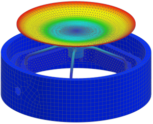

Plot and overlay loaded superelement results
Display the mode shape for mode 9. This is the first flexible body mode.
 Post-Processing Navigator
Post-Processing Navigator
-

 Mode 9 (expand)
Mode 9 (expand)
-
Displacement - Nodal (expand)
-
Magnitude
-
 Plot and Overlay Loaded SE
Plot and Overlay Loaded SEThe software plots the results for the residual (in this case, the 12 spring elements) and automatically overlays post views of the same result set and component for each of the loaded superelement data blocks.
